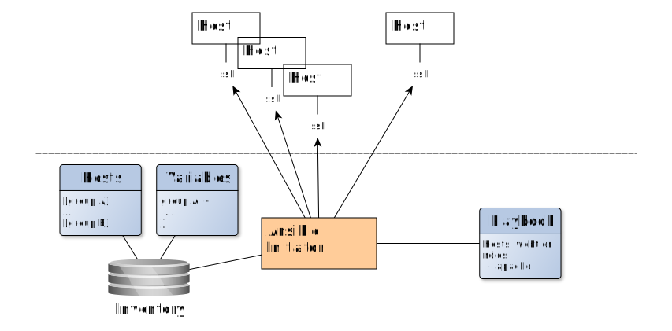

<!doctype html>
<html lang="en">

	<head>
		<meta charset="utf-8">

		<title>Cloud Deployment Automation - VogelIT Cloud Computing - Felix Frank</title>

		<meta name="description" content="Slides for the Cloud Deployment Automation presentation">
		<meta name="author" content="Felix Frank">

		<meta name="apple-mobile-web-app-capable" content="yes" />
		<meta name="apple-mobile-web-app-status-bar-style" content="black-translucent" />

		<meta name="viewport" content="width=device-width, initial-scale=1.0, maximum-scale=1.0, user-scalable=no, minimal-ui">

		<link rel="stylesheet" href="css/reveal.css">
		<link rel="stylesheet" href="css/theme/white-light-code.css" id="theme">

		<!-- Code syntax highlighting -->
		<link rel="stylesheet" href="lib/css/tomorrow.css">

		<!-- Printing and PDF exports -->
		<script>
			var link = document.createElement( 'link' );
			link.rel = 'stylesheet';
			link.type = 'text/css';
			link.href = window.location.search.match( /print-pdf/gi ) ? 'css/print/pdf.css' : 'css/print/paper.css';
			document.getElementsByTagName( 'head' )[0].appendChild( link );
		</script>

		<!--[if lt IE 9]>
		<script src="lib/js/html5shiv.js"></script>
		<![endif]-->

	</head>

	<body>
		<style>
		/* override theme */
		.reveal section img { border: 0px; }
		.reveal img.plain { box-shadow: none }
		.reveal a { color: black; }
		/* custom classes */
		p.source { font-size: small; text-align: right }
		p.large { font-size: 200% }
		p.smaller { font-size: 75%; }
		div.title { position: absolute; top: 50px }
		span.odd { color: #8a8a8a; }
		</style>

		<div class="reveal">

			<div class="slides">
 				<section data-background="vogelit.png">
					&nbsp;
				</section>

				<section>
					<h2>Puppenspielertricks f&uuml;r die Cloud</h2>
					<p>VogelIT Cloud Computing, München</p>
					<p class="smaller" style="margin-top: 2em;">
						Felix Frank, Systems Architect<br/>
						The unbelievable Machine Company GmbH
					</p>
				</section>
				
				<section>
					<h3>Felix Frank</h3>
					<ul>
					<li>Computermensch</li>
					<li>Radfahrer</li>
					<li>trockener Open-Source Entwickler</li>
					<li>@felis_rex</li>
					</ul>
					<aside class="notes">
						Business Brille
					</aside>
				</section>

				<section>
					<h3>The unbelievable Machine Company</h3>
					
					<div>
						
						
						
					</div>
					<aside class="notes">
						Cloud, Hybrid Cloud, Big Data, Internet of Things,
						Synergien, Digital First, Cloud Native, DevOps,
						Micro-Services
					</aside>
				</section>

				<section>
					<p class="large">Unendliche Buzzwords</p>
					<p class="fragment">...und "Cloud" ist eines der häufigsten</p>
				</section>

				<section>
					<section>
					
					</section>

					<section>
					<p>...und aus gegebenem Anlass</p>
					
					</section>
				</section>

				<section>
					<p>Essenz: software-definierte Infrastruktur</p>
					
					<p class="source">https://commons.wikimedia.org/wiki/File:Person_icon.png</p>
					<p class="source">http://commons.wikimedia.org/wiki/User:Heb</p>
					<p class="source">https://commons.wikimedia.org/wiki/File:Generic_Server_Icon.svg</p>
				</section>

				<section>
					<section>
						<p>Perfektes Pendant zu</p>
						<p class="large">Infrastructure as Code</p>
					</section>
					<section>
						<p>Warum?</p>
					</section>
				</section>

				<section>
					<p class="large">Beispielsituation</p>
<pre>
commit f38828d4047ba803fd4d0ef906f109cfb57e9bb6
Author: Felix Frank <felix.frank@unbelievable-machine.com>
Date:   Mon Sep 18 02:48:58 2017 +0200

    move product title index to redis
</pre>
					<div class="fragment">
						<p>Tests laufen durch</p>
						<ul>
						<li>Unit Tests</li>
						<li>Integrationstests</li>
						<li>Acceptance Tests</li>
						</ul>
					</div>
				</section>

				<section>
					<p class="large">Produktion<br/>bricht katastrophal</p>
					<p class="fragment">...Deployment erforderte Firewall Anpassung</p>
				</section>

				<section>
					<p class="large">Wie hilft die Cloud?</p>
					<ol class="fragment">
					<li>kurzer Technologie-Exkurs</li>
					<li>Praxisbeispiel</li>
					<li>Business Value</li>
					</ol>
				</section>

				<section>
					<h1>Infrastructure<br/>as Code</h1>
				</section>

				<section>
					<p class="large">Config Management<br/>auf einen Blick</p>
					
				</section>

				<section>
					
				</section>

				<section>
					
					<aside class="notes">
						de-fakto Standard
						zentrale Server
						Pull Modell
					</aside>
				</section>

				<section>
<pre><code class="puppet">
class apache {
  package { "apache2":
    ensure => installed,
  }
  ->
  file { "/etc/apache2/apache2.conf":
    content => epp("apache/apache2.conf.epp"),
  }
}

</code></pre>
				</section>

				<section>
<pre><code class="puppet">
ec2_instance { 'lk10px33':
  ensure            => running,
  region            => 'us-east-1',
  availability_zone => 'us-east-1a',
  image_id          => 'ami-b23f9a',
  instance_type     => 't2.micro',
  ...

</code></pre>
				</section>

				<section>
					
				</section>

				<section>
					
					<aside class="notes">
						juenger, beliebt
						push Modell
						ganzer Vortrag v Puppet
						praktisch alle Clouds
					</aside>
				</section>

				<section>
<pre><code>
---
- name: Deploy Webservers
  hosts: was
  roles:
    - common
    - tomcat
    - nginx

- name: Deploy Loadbalancers
  hosts: loadbalancer
  roles:
    - common
    - haproxy
    - keepalived

</code></pre>
					<aside class="notes">
						Cloud Modules
					</aside>
				</section>

				<section>
					
					<aside class="notes">
						keine eigene Erfahrung
						spezifisch fuer Clouds
					</aside>
				</section>

				<section>
<pre><code>
resource "aws_instance" "app" {
  count = 5
  ami           = "ami-408c7f28"
  instance_type = "t1.micro"
}

</code></pre>
					<p class="source">https://www.terraform.io/</p>
				</section>

				<section>
<pre><code>
provider "aws" {
  access_key = "AWS ACCESS KEY"
  secret_key = "AWS SECRET KEY"
  region     = "AWS REGION"
}
module "consul" {
  source = "github.com/hashicorp/consul/terraform/aws"

  key_name = "AWS SSH KEY NAME"
  key_path = "PATH TO ABOVE PRIVATE KEY"
  region   = "us-east-1"
  servers  = "3"
}

</code></pre>
					<p class="source">https://www.terraform.io/intro/getting-started/modules.html</p>
					<aside class="notes">
						maechtiger als Module in P/A
						andere Tools
					</aside>
				</section>

				<section>
					<p class="large">Welches Tool ist f&uuml;r mich?</p>
					<aside class="notes">
						out of scope
						diverse Abw&auml;gungen
					</aside>
				</section>

				<section>
					<h1>Im wahren Leben</h1>
				</section>

				<section>
					<p class="large">E-Commerce Anwendung</p>
					
				</section>

				<section>
					<p class="large">Hosted in Openstack</p>
					
				</section>

				<section>
					<p class="large">Git Monolith</p>
<pre>
+
|- client code
 \- (lots of Java...)
|
|- server code
 \- (more Java...)
|
|- deployment
 \- ansible
  |- playbooks
  |- roles
  \- environment
   |- production
   |- pre-live
   |- testing
</pre>
				</section>

				<section>
<pre><code style="max-height: 90%">
  - type: was
    description: webappservers
    clouds:
      site1:
        azs: [ AZ1, AZ3 ]
      site2:
        azs: [ AZ1, AZ3 ]
    flavor: "MM-2-15-V1"
    size: 20

  - type: db
    description: dbservers
    clouds:
      site1:
        azs: [ AZ1, AZ2 ]
      site2:
        azs: [ AZ2, AZ3 ]
      site3:
        azs: [ AZ1 ]
    flavor: "MS-4-4-V1"
    size: 20

</code></pre>
				</section>

				<section>
					<p class="large">Ansible Deployment</p>
					<section></section>
					<section></section>
					<section></section>
					<section></section>
					<section></section>
					<section></section>
					<section></section>
				</section>

				<section>
					<p>Sauberes Deployment in der Cloud</p>
				</section>

				<section>
					<p class="large">Frische Web-App-Server</p>
					<section></section>
					<section></section>
					<section></section>
					<section></section>
					<section></section>
					<section></section>
					<section></section>
					<section></section>
					<section></section>
					<aside class="notes">
						Infra Changes
					</aside>
				</section>

				<section>
					<p>Deployments ohne Downtime</p>
					<p class="large">Gr&uuml;n-Blau Deployment<br/>in der Cloud</p>
				</section>

				<section>
					<p class="large">Gr&uuml;n-Blau Deployment</p>
					<section></section>
					<section></section>
					<section></section>
					<section></section>
					<section></section>
					<section></section>
					<section></section>
					<section></section>
					<section></section>
				</section>

				<section>
					<p>Bessere Test Coverage dank Cloud</p>
				</section>

				<section>
					<p class="large">Infrastruktur CI</p>
					<section></section>
					<section></section>
					<section></section>
					<section></section>
					<section></section>
					<section></section>
					<section></section>
				</section>

				<section>
					<section>
						<h1>Zusammengefasst</h1>
					</section>

					<section>
						<p class="large">Infrastructure as Code<br/>
						als wichtiger<br/>Automation Eckpfeiler</p>
					</section>

					<section>
						<p class="large">CI Zyklus<br/>
						umfasst Konfiguration<br/>und Redeployments</p>
					</section>

					<section>
						<p class="large">Cloud erlaubt umfassende<br/>
						Infrastructure as Code<br/>Implementierung</p>
					</section>
				</section>

				<section>
					<p class="large">Vielen Dank</p>
				</section>

				<section>
					<p class="large">Ein Wort zu DevOps</p>
					<ul class="fragment">
					<li><b>C</b>ulture</li>
					<li><b>L</b>earning</li>
					<li><b>A</b>utomation</li>
					<li><b>M</b>easure</li>
					<li><b>S</b>haring</li>
					</ul>
				</section>
			</div>

			<div id="footer" style="background: url(footer.png);
						position: absolute;
						bottom: 0px;
						left: 0px;
						right: 0px;
						height:46px;
						width:1060px;
						color: black;
						font-size: 20px;
						padding: 4px;">

			</div>
<!--
				<span style="float: left; width: 33%;">
					&nbsp;
				</span>
				<span style="float: left; left: 33%; width: 33%; text-align: center;">
					&nbsp;
				</span>
				<span style="float: left; right: 0px; width: 33%; text-align: right;">
					Felix Frank (@felis_rex) - Automation
				</span>

			<div id="myLogo" style="background: url(um-logo.png);
						position: absolute;
						bottom: 34px;
						right: 10px;
						width: 125px;
						height: 103px;">
			</div>

			<div id="myLogo" style="background: url(osdc-logo.png);
						position: absolute;
						bottom: 40px;
						left: 0px;
						width: 200px;
						height: 90px;">
			</div>
-->
		</div>

		<script src="lib/js/head.min.js"></script>
		<script src="js/reveal.js"></script>

		<script>

			// Full list of configuration options available at:
			// https://github.com/hakimel/reveal.js#configuration
			Reveal.initialize({
				controls: false,
				progress: true,
				history: true,
				center: true,

				transition: 'fade', // none/fade/slide/convex/concave/zoom

				// Optional reveal.js plugins
				dependencies: [
					{ src: 'lib/js/classList.js', condition: function() { return !document.body.classList; } },
					{ src: 'plugin/markdown/marked.js', condition: function() { return !!document.querySelector( '[data-markdown]' ); } },
					{ src: 'plugin/markdown/markdown.js', condition: function() { return !!document.querySelector( '[data-markdown]' ); } },
					{ src: 'plugin/highlight/highlight.js', async: true, condition: function() { return !!document.querySelector( 'pre code' ); }, callback: function() { hljs.initHighlightingOnLoad(); } },
					{ src: 'plugin/zoom-js/zoom.js', async: true },
					{ src: 'plugin/notes/notes.js', async: true }
				]
			});

		</script>

	</body>
</html>
